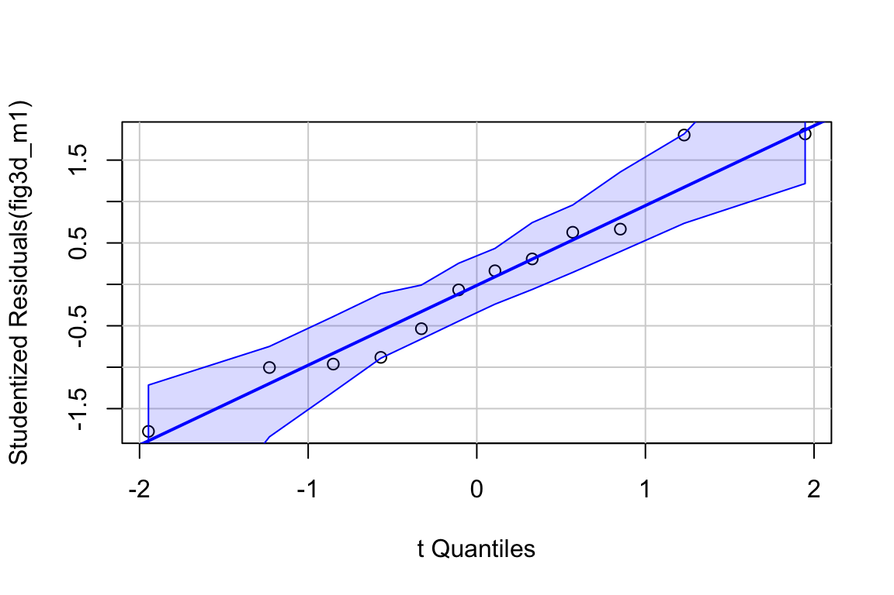
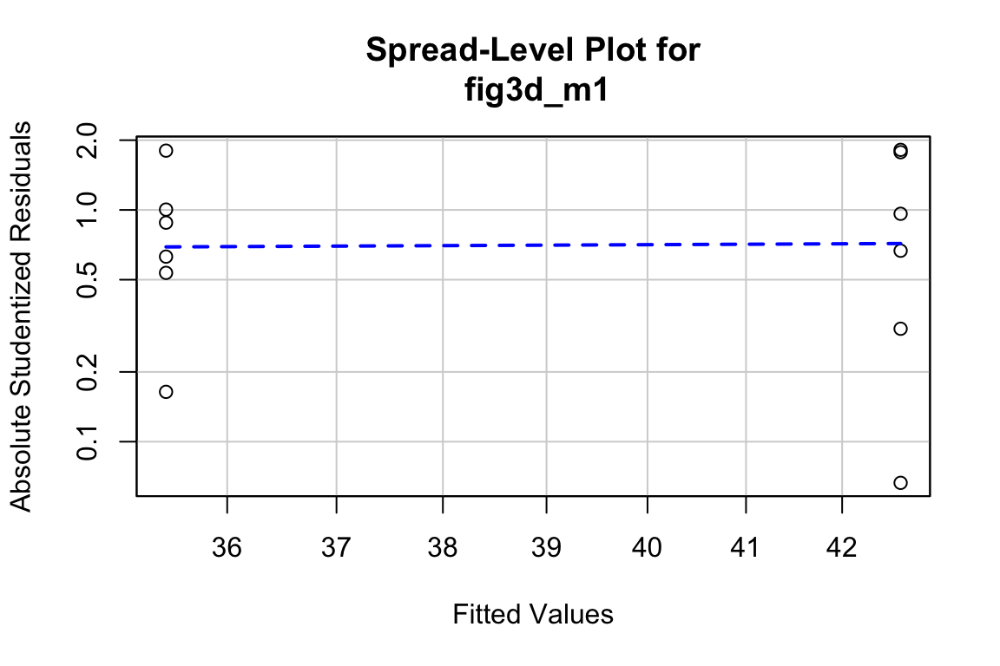
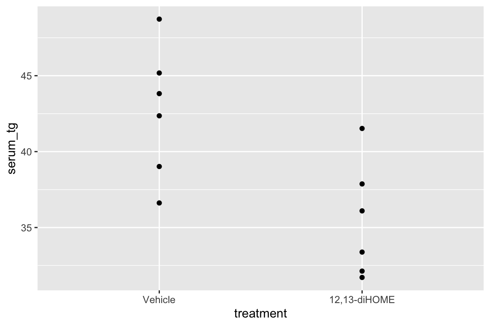

Chapter 7 Models with a single, continuous X
- observation warming on phenology
- experiment warming on phenology
- using regression to compare longitudinal (dietary methionine)
7.1 A linear model with a single, continuous X is classical “regression”
7.1.1 Analysis of “green-down” data
To introduce some principles of modeling with a single continuous \(X\) variable, I’ll use a dataset from Richardson, A.D., Hufkens, K., Milliman, T. et al. Ecosystem warming extends vegetation activity but heightens vulnerability to cold temperatures. Nature 560, 368–371 (2018)..
The data are from a long-term experiment on the effects of warming and CO2 on a high-carbon northern temperate peatland and is the focal dataset of the study. The experiment involves 10 large, temperature and CO2 controlled enclosures. CO2 is set to 400 ppm in five enclosures and 900 ppm in five enclosures. Temperature of the five enclosures within each CO2 level is set to 0, 2.25, 4.5, 6.75, or 9 °C above ambient temperature. The multiple temperature levels is a regression design, which allows a researcher to measure non-linear effects. Read more about the experimental design and the beautiful implementation.
The question pursued is in this study is, what is the causal effect of warming on the timing (or phenology) of the transition into photosynthesetic activity (“green-up”) in the spring and of the transition out of photosynthetin ic activity (“green-down”) in the fall? The researchers measured these transition dates, or Day of Year (DOY), using foliage color. Here, we focus on the transition out of photosynthesis or “green-down” DOY.
- Vet the data
gg1 <- qplot(x = temperature,
y = transition_date,
data = fig2c) +
geom_smooth(method = "lm")
gg2 <- qplot(x = temperature,
y = transition_date,
data = fig2c) +
geom_smooth(method = "lm", formula = y ~ poly(x, 2))
gg3 <- qplot(x = temperature,
y = transition_date,
data = fig2c) +
geom_smooth()
plot_grid(gg1, gg2, gg3, ncol=3)
No plot shows any obvious outlier that might be due to measurement blunders or curation error. The linear regression in the left-most plot clearly shows that a linear response is sufficient to capture the effect of temperature on day of green-down.
choose a model. Because the \(X\) variable (\(temperature\)) was experimentally set to five levels, the data could reasonably be modeled using either a linear model with a categorical \(X\) or a linear model with a continuous \(X\). The advantage of modeling \(temperature\) as a continuous variable is that there is only one effect, the slope of the regression line. If modeled as a categorical factor with five levels, there are, at a minimum, four interesting effects (the difference in means between each non-reference level and reference (temperature = 0) level). Also, for inference, modeling \(temperature\) as a continuous variable increases power for hypothesis tests.
fit the model
- check the model

The Q-Q plot indicates the distribution of residuals is well within that expected for a normal sample and there is no cause for concern with inference.
##
## Suggested power transformation: 0.6721303The spread-location plot shows no conspicuous trend in how the spread changes with the conditonal mean. There is no cause for concern with inference.
- inference from the model
m1_coeff <- summary(m1) %>%
coef()
m1_confint <- confint(m1)
m1_coeff <- cbind(m1_coeff, m1_confint)
m1_coeff## Estimate Std. Error t value Pr(>|t|) 2.5 %
## (Intercept) 289.458750 3.0593949 94.613071 1.738650e-13 282.403773
## temperature 4.982745 0.5541962 8.990941 1.866888e-05 3.704767
## 97.5 %
## (Intercept) 296.513728
## temperature 6.260724The effect of added temperature on the day of green-down is 4.98 d per 1 °C (95% CI: 3.7, 6.3; p < 0.001).
- plot the model
Figure 7.1: Re-plot of Figure 2c showing the experimental effect of warming on the date of autumn green-down (the transition to fall foliage color) in a mixed shrub community. The plot type is a scatterplot. The regression line shows the expected value of Y (transition day of year) given a value of X (added temperature). The slope of the regression line is the effect.
7.1.2 Learning from the green-down example
Figure 7.1 is a scatterplot with the green-down DOY for the mixed-shrub community on the \(Y\) axis and added temperature on the \(X\) axis. The line through the data is a regression line, which is the expected value of Y (green-down DOY) given a specific value of X (added temperature). The slope of the line is the effect of added temperature on timing of green-down. We could report “The effect of added temperature is Slope: 4.98 (3.7, 6.26) d per 1 °C”. The intercept of the regression line is the value of the response (day of green-down) when \(X\) is equal to zero. Very often, this value is not of interest although the value should be reported to allow predictions from the model. Also very often, the value of the intercept is not meaningful because a value of \(X = 0\) is far outside the range of measured \(X\), or the value is absurd because it is impossible (for example, if investigating the effect of body weight on metabolic rate, the value \(weight = 0\) is impossible).
The intercept and slope are the coefficients of the model fit to the data, which is
\[\begin{equation} day_i = b_0 + b_1 temperature_i + e_i \tag{7.1} \end{equation}\]
where day is the day of green-down, temperature is the added temperature, and i refers (or “indexes”) the ith enclosure. This model completely reconstructs the day of green-down for all ten enclosures. For example, the day of green-down for enclosure 8 is
\[\begin{equation} 332 = 289.458750 + 4.982745 \times 6.73 + 9.00737 \end{equation}\]
The coefficients in the model are estimates of the parameters of a generating model
\[\begin{align} day &= \beta_0 + \beta_1 temperature + \varepsilon\\ \varepsilon &\sim N(0, \sigma^2) \tag{7.2} \end{align}\]
A generating model of the data is used to make inference, for example, a measure of uncertainty in a prediction in the timing of green-down with future warming, or a measure of uncertainty about the effect of temperature on green-down. A generating model is not necessarily a model of how the researcher believes the actual data were generated.
7.1.3 What a regression coefficient means
A regression coefficient, such as the coefficient for temperature, \(\beta_1\), has two interpretations, a probabilistic interpretation and a causal interpretation. To understand these interpretations, it’s useful to remember that a predicted value from a regression model is a conditional mean
\[\begin{equation} \textrm{E}[day|temperature] = \beta_0 + \beta_1 temperature \tag{7.3} \end{equation}\]
In words “the expected value of day conditional on temperature is beta-knot plus beta-one times temperature”. An expected value is a long run average – if we had an infinite number of enclosures with \(temperature=x\) (where \(x\) is a specific value of added temperature, say 2.5 °C), the average \(day\) of these enclosures is \(\beta_0 + \beta_1 x\).
The parameter \(\beta_1\) is a difference in conditional means.
\[\begin{equation} \beta_1 = \textrm{E}[day|temperature = x+1] - \textrm{E}[day|temperature = x] \tag{7.4} \end{equation}\]
In words, “beta-one is the expected value of day of green-down when the temperature equals x + 1 minus the expected value of day of green-down when the temperature equals x.” A very short way to state this is “beta-one is a difference in conditional means”.
tl;dr. Note that the “+ 1” in this definition is mere convenience. Since the slope of a line is \(\frac{y_2 - y_1}{x_2 - x_1}\), where (\(x_1\), \(y_1\)) and (\(x_2\), \(y_2\)) are the coordinates of any two points on the line, it is convenient to choose two points that differ in \(X\) by one unit, which makes the fraction equal to the numerator only. The numerator is a difference in conditional means. It is also why the units of a regression coefficient are "per unit of \(X\) even if defined as a difference in two \(Y\) values.
The difference between probabilistic and causal interpretations of \(\beta_1\) depends on the “event” conditioned on in \(\textrm{E}[day|temperature]\). Let’s start with the causal interpretation, which is how we should think about the regression coefficients in the green-down experiment.
7.1.3.1 Causal interpretation – conditional on “doing” X = x
In the causal interpretation of regression, \(\textrm{E}[day|temperature]\) is conditioned on “doing” a real or hypothetical intervention in the system where we set the value of \(temperature\) to a specific value \(x\) ("\(temperature=x\)), while keeping everything else about the system the same. This can be stated explicitly as \(\textrm{E}[day|\;do\;temperature = x]\). Using the do-operator, we can interpret \(\beta_1\) as an effect coefficient
\[\begin{equation} \beta_1 = \textrm{E}[day|\;do\;temperature = x+1] - \textrm{E}[day|\;do\;temperature = x] \end{equation}\]
In words, “beta-one is the expected value of day of green-down were we to set the temperature to x + 1 minus the expected value of day of green-down were we to set the temperature to x.”
tl;dr. In the green-down experiment, the researchers didn’t set the temperature in the intervened enclosures to the ambient temperature + 1 but to ambient + 2.25, ambient + 4.5, ambient + 6.75, and ambient + 9.0. Again (see tl;dr above), the + 1 is mere convenience in the definition.
7.1.3.2 Probabilistic interpretation – conditional on “seeing” X = x.
In the probabilistic interpretation of regression, \(\textrm{E}[day|temperature]\) is conditioned on sampling data and “seeing” a value of \(temperature\). We can state this explicitly as \(\textrm{E}[day|\;see\;temperature]\). From this, we can interpret \(\beta_1\) as a probabilistic coefficient
\[\begin{equation} \beta_1 = \textrm{E}[day|\;see\;temperature = x+1] - \textrm{E}[day|\;see \;temperature = x] \end{equation}\]
In words, “beta-one is the expected value of day of green-down when see that temperature equals x + 1 minus the expected value of day of green-down when we see that temperature equals x.” To understand what I mean by “probabilistic”, let’s imagine that the green-down data do not come from an experiment in which the researchers intervened and set the added temperature to a specifc value but from ten sites that naturally vary in mean annual temperature. Or from a single site with 10 years of data, with some years warmer and some years colder. Data from this kind of study is observational – the researcher didn’t intervene and set the \(X\) values but merely observed the \(X\) values.
If we sample (or “see”) a site with a mean annual temperature that is 2.5 °C above a reference value, the expected day of green-down is \(\textrm{E}[day|temperature = 2.5 °C]\). That is, values near \(\textrm{E}[day|temperature = 2.5 °C]\) are more probable than values away from \(\textrm{E}[day|temperature = 2.5 °C]\). Or, if the only information that we have about this site is a mean annual temperature that is 2.5 °C above some reference, then our best prediction of the day of green-down would be \(\textrm{E}[day|temperature = 2.5 °C]\). We do not claim that the 4.98 day delay in green-down is caused by the warmer temperature, only that this is the expected delay relative to the reference having seen the data.
The seeing interpretation of a regression coefficient is descriptive– it is a description of a mathematical relationship. In this interpretation, the coefficient is not causal in the sense of what the expected response in \(Y\) would be were we to intervene in the system and change \(X\) from \(x\) to \(x+1\).
7.1.3.3 Omitted variable bias
What is the consequence of interpreting a regression coefficient causally instead of probabilistically?

Figure 7.2: a Directed Acyclic (or causal) Graph of a hypothetical world where the day of green-down is caused by two, correlated environmental variables, temperature and moisture, and to a noise factor (U) that represents an unspecified set of additional variables that are not correlated to either temperature or moisture.
Let’s expand the thought experiment where we have an observational data set of green down dates. In this thought experiment, only two variables systematically affect green-down DOY. The first is the temperature that the plants experience; the effect of \(temperature\) is \(\beta\). The second is the soil moisture that the plants experience; the effect of \(moisture\) is \(\alpha\). \(temperature\) and \(moisture\) are correlated with a value \(\rho\). This causal model is graphically represented by the causal graph above.
Lets call \(\mathcal{M}_1\) the linear model including both \(temperature\) and \(moisture\) as \(X\) variables and \(\mathcal{M}_2\) the linear model including only \(temperature\) as an \(X\) variable. With \(\mathcal{M}_1\), the regression coefficient for \(temperature\) is unbiased, which means the expected value of the coefficient for \(temperature\) is equal the true effect \(\beta\). But, with \(\mathcal{M}_2\), regression coefficient for \(temperature\) is biased, which means the expected value of this coefficient does not equal the true effect \(\beta\) but the true effect plus some bias term
\[\begin{equation} \mathrm{E}(b_1|\mathcal{M}_1) = \beta + \rho \alpha \frac{\sigma_{moisture}}{\sigma_{temperature}} \end{equation}\]
This bias (\(\rho \alpha \frac{\sigma_{moisture}}{\sigma_{temperature}}\)) is omitted variable bias. The omitted variable \(moisture\) is an unmeasured, confounding variable. If confounding variables are omitted from a statistical model, then, as we sample more and more data, our estimate of the effect doesn’t converge on the truth but the truth plus some bias.
7.1.4 Using the linear model for prediction – prediction models
Model (7.1) recovers the measured value of \(day\) (green-down DOY) for each enclosure. The equation includes the linear predictor (\(b_0 + b_1 temperature\)) and the residual from the predictor (\(e_i\)). The predictor part is called “predictor” because it is the equation for predicting the timing of green-down for any value of \(temperature\)
\[\begin{equation} \widehat{day}_i = b_0 + b_1 temperature_i (\#eq:doy_hat) \end{equation}\]
where \(\widehat{day}\) is read as “day hat” and is the predicted value or simply the prediction. I prefer modeled value but that term is not in widespread use. If the value is computed for the data that were used for the fit, then \(\widehat{day}_i\) is the fitted value. In a prediction model, we use the predictor part to predict unknown or future values given different modeled inputs (the \(X\)).
| T increase (°C) | Predicted Green-down DOY |
|---|---|
| 1 | 294 |
| 2 | 299 |
| 3 | 304 |
| 4 | 309 |
| 5 | 314 |
In multivariable models (models with multiple \(X\) variables), the coefficients (or some function of the coefficients) might be used to assess the “importance” of the \(X\) variable to the prediction but, in general, the coefficients are not interpreted either probabilistically or causally, unless the model is also explicitly causal.
7.1.5 Using a linear model for “explanation” – causal models
In this text, “explanatory” means “causal” and a goal of explanatory modeling is the estimates of causal effects using the causal interpretation of the regression coefficients.
Causal interpretation requires conditioning on “doing X=x”. For the green-down data, “doing X=x” is achieved by the random treatment assignment of the enclosures. How does random treatment assignment achieve this? Look again at Figure 7.2. If the values of \(treatment\) are randomly assigned, then, by definition, the expected value of the correlation between \(treatment\) and \(moisture\) is zero. In fact, the expected value of the correlation between \(treatment\) and any measurable variable at the study site is zero. Given, this, the expected value of the regression coefficient for \(temperature\) (\(b_1\)) is \(\beta\) because \(\rho=0\). That is, the estimate of the true effect is unbiased. It doesn’t matter if \(moisture\), or any other variable, is excluded from the model. (That said, we may want to include moisture or other variables in the model to increase precision of the causal effect. This is addressed in the chapter “Models with Covariates”). This is what an experiment does and why experiments are used to answer causal questions.
Can we use observational data for causal modeling? Yes, but the methods for this are outside of the scope of this text. The mathematical foundation for this is known as path analysis, which was developed by geneticist and evolutionary biologist Sewell Wright (I include this because this work has inspired much of how I think about biology and because he is both my academic grandfather and great-grandfather). Causal analysis of observational data in biology is rare outside of ecology and epidemiology. Good starting points for the modern development of causal analysis are Hernán MA and Robins JM (2020) and Burgess et al. (2018). A gentle introduction is Pearl and Mackenzie (2018)
7.2 Working in R
7.2.1 Fitting the linear model
A linear model is fit with the lm function, which is very flexible and will be a workhorse in much of this text.
m1 is an lm model object that contains many different kinds information, such as the model coefficients.
## (Intercept) temperature
## 289.458750 4.982745We’ll return to others, but first, let’s explore some of the flexibility of the lm function. Two arguments were sent to the function
- the model formula
transition_date ~ temperaturewith the formY ~ X, where Y and X are names of columns in the data.
- The model formula itself be assinged to a variable, which is useful when building functions. An example
coef_table <- function(x, y, data){
m1_form <- formula(paste(y, "~", x))
m1 <- lm(m1_form, data = data)
return(coef(summary(m1)))
}
coef_table(x = "temperature",
y = "transition_date",
data = fig2c)## Estimate Std. Error t value Pr(>|t|)
## (Intercept) 289.458750 3.0593949 94.613071 1.738650e-13
## temperature 4.982745 0.5541962 8.990941 1.866888e-05- Both Y and X can also be column names embedded within a function, for example
## (Intercept) temperature
## 5.6690276 0.0160509or
## (Intercept) scale(temperature)
## 6.484929e-16 9.539117e-01- The data frame (remember that a data.table is a data frame) containing the columns with the variable names in the model formula. A data argument is not necessary but it is usually the better way (an exception is when a researcher wants to create a matrix of Y variables or to construct their own model matrix)
type ?lm into the console to see other arguments of the lm function.
## (Intercept) x
## 289.458750 4.9827457.2.2 Getting to know the linear model: the summary function
The lm function returns an lm object, which we’ve assigned to the name m1. m1 contains lots of information about our fit of the linear model to the data. Most of the information that we want for most purposes can be retrieved with the summary function, which is a general-purpose R command the works with many R objects.
##
## Call:
## lm(formula = transition_date ~ temperature, data = fig2c)
##
## Residuals:
## Min 1Q Median 3Q Max
## -7.5062 -3.8536 0.6645 2.7537 9.0074
##
## Coefficients:
## Estimate Std. Error t value Pr(>|t|)
## (Intercept) 289.4588 3.0594 94.613 1.74e-13 ***
## temperature 4.9827 0.5542 8.991 1.87e-05 ***
## ---
## Signif. codes: 0 '***' 0.001 '**' 0.01 '*' 0.05 '.' 0.1 ' ' 1
##
## Residual standard error: 5.443 on 8 degrees of freedom
## Multiple R-squared: 0.9099, Adjusted R-squared: 0.8987
## F-statistic: 80.84 on 1 and 8 DF, p-value: 1.867e-05What is here:
Call. This is the model that was fit
Residuals. This is a summary of the distribution of the residuals. From this one can get a sense of the distribution (for inference, the model assumes a normal distribution with mean zero). More useful ways to examine this distribution will be introduced later in this chapter.
Coefficients table. This contains the linear model coefficients and their standard error and associated \(t\) and \(p\) values.
- The column of values under “Estimate” are the coefficients of the fitted model (equation (7.1)). Here, 289.4587503 is the intercept (\(b_0\)) and 4.9827453 is the effect of \(temperature\) (\(b_1\)).
- The column of values under “Std. Error” are the standard errors of the coefficients.
- The column of values under “t value” are the t-statistics for each coefficient. A t-value is a signal to noise ratio. The coefficient \(b_1\) is the “signal” and the SE is the noise. Get used to thinking about this ratio. A t-value greater than about 3 indicates a “pretty good” signal relative to noise, while one much below than 2 is not.
- The column of values under “Pr(>|t|)” is the p-value, which is the t-test of the estimate. What is the p-value a test of? The p-value tests the hypothesis “how probable are the data, or more extreme than than the data, if the true parameter is zero?”. Formally \(p = \mathrm{freq(t' \ge t|H_o)}\), where \(t'\) is the hypothetical t-value, t is the observed \(t\)-value, and \(H_o\) is the null hypothesis. We will return to p-values in Chapter xxx.
Signif. codes. Significance codes are extremely common in the wet bench experimental biology literature but do not have much to recommend. I’ll return to these in the p-values chapter.
Beneath the Signif. codes are some model statistics which are useful
Residual standard error This is \(\sqrt{\sum{e_i^2}/(n-2)}\), where \(e_i\) are the residuals in the fitted model. “degrees of freedom” is the number of \(e_i\) that are “allowed to vary” after fitting the parameters, so is the total sample size (\(n\)) minus the number of parameters in the model. The fit model has two fit parameters (\(b_0\) and \(b_1\) so the df is \(n-2\). Note that this is the denominator in the residual standard error equation.
Multiple R-squared. This is an important but imperfect summary measure of the whole model that effectively measures how much of the total variance in the response variable “is explained by” the model. Its value lies between zero and 1. It’s a good measure to report in a manuscript, especially for observational data.
F-statistic and p-value. These are statistics for the whole model (not the individual coefficients) and I just don’t find these very useful.
7.2.3 Inference – the coefficient table and Confidence intervals
To get the coefficient table without the other statistics from summary, use summary(m1) %>% coef().
m1_coeff <- summary(m1) %>%
coef()
m1_confint <- confint(m1)
m1_coeff <- cbind(m1_coeff, m1_confint)
m1_coeff## Estimate Std. Error t value Pr(>|t|) 2.5 %
## (Intercept) 289.458750 3.0593949 94.613071 1.738650e-13 282.403773
## temperature 4.982745 0.5541962 8.990941 1.866888e-05 3.704767
## 97.5 %
## (Intercept) 296.513728
## temperature 6.260724Note that the p-value for the coefficient for temperature is very small and we could conclude that the data are not compatible with a model of no temperature effect on day of green-down. But did we need a formal hypothesis test for this? We haven’t learned much if we have only learned that the slope is “not likely to be exactly zero” (Temperature effects everything in biology). A far more important question is not if there is a relationship between temperature and day of green-down, but what is the sign and magnitude of the effect and what is the uncertainty in our estimate of this effect. For this, we we want the coefficient and its SE or confidence interval, both of which are in this table. Remember, our working definition of a confidence interval:
A confidence interval contains the range of parameter values that are compatible with the data, in the sense that a \(t\)-test would not reject the null hypothesis of a difference between the estimate and any value within the interval
A more textbook way of defining a CI is: A 95% CI of a parameter has a 95% probability of including the true value of the parameter. It does not mean that there is a 95% probability that the true value lies in the interval. This is a subtle but important difference. Here is a way of thinking about the proper meaning of the textbook definition: we don’t know the true value of \(\beta_1\) but we can 1) repeat the experiment or sampling, 2) re-estimate \(\beta_1\), and 3) re-compute a 95% CI. If we do 1-3 many times, 95% of the CIs will include \(\beta_1\) within the interval.
Confidence intervals are often interpreted like \(p\)-values. That is, the researcher looks to see if the CI overlaps with zero and if it does, concludes there is “no effect”. First, this conclusion is not correct – the inability to find sufficient evidence for an effect does not mean there is no effect, it simply means there is insufficient evidence to conclude there is an effect!
Second, what we want to use the CI for is to guide us about how big or small the effect might reasonably be, given the data. Again, A CI is a measure of parameter values that are “compatible” with the data. If our biological interpretations at the small-end and at the big-end of the interval’s range radically differ, then we don’t have enough precision in our analysis to reach an unambiguous conclusion.
7.2.4 How good is our model?
A good model has several features including
- For prediction, a good model accounts for a large fraction of the total variance. The fraction of the total variance accounted for by the model is the \(R^2\) value, which is given in
summary(m1)and accessed directly with
## [1] 0.9099475\(R^2\) is the fraction of the total variance of \(Y\) that is generated by the linear predictor.
\[\begin{equation} R^2 = \frac{\mathrm{VAR}(\hat{y})}{\mathrm{VAR}(y)} \end{equation}\]
## [1] 0.9099475\(R^2\) will vary from zero (the model accounts for nothing) to one (the model accounts for everything). \(R^2\) is often described as the fraction of total variation explained by the model" but the usage of “explain” is probabilistic and not causal. Because of the ambiguous usage of “explain” in statistics, I prefer to avoid the word.
It can be useful sometimes to think of \(R^2\) in terms of residual error, which is the variance of the residuals from the model. The larger the residual error, the smaller the \(R^2\), or
\[\begin{equation} R^2 = 1 \frac{\mathrm{VAR}(e)}{\mathrm{VAR}(y)} \end{equation}\]
## [1] 0.9099475The smaller the residuals, the higher the \(R^2\) and the closer the predicted values are to the measured values. The sum of the model variance and residual variance equals the total variance and, consequently, \(R^2\) is a signal to signal + noise ratio. The noise in \(R^2\) is the sampling variance of the individual measures. The noise in a t-value is the sampling variance of the parameter (for m1, this is the sampling variance of \(b_1\)). This is an important distinction because it means that t and \(R^2\) are not related 1:1. In a simple model with only a single \(X\), one might expect \(R^2\) to be big if the p-value for the slope is tiny, but this isn’t necessarily true because of the different meaning of noise in each. A study with a very large sample size \(n\) can have a tiny p-value and a small \(R^2\). A p-value is not a good indicator of predictability. \(R^2\) is.
- For inference, a good model has well-behaved residuals. There are several aspects of “well-behaved” and each is checked with a diagnostic plot. This model checking is covered in more detail in chapter xxx.
Inference from model (7.2) assumes the data were sampled from a normal distribution. To check this, use a quantile-quantile or Q-Q plot. The qqPlot function from the car package generates a more useful plot than that from Base R.

Approximately normal residuals will track the solid line and stay largely within the boundaries marked by the dashed lines. The residuals from m1 fit to the green-down data track the solid line and remain within the dashed lines, indicating adequate model fit.
Note that a formal test of normality is often recommended. Formal tests do not add value above a diagnostic check. Robustness of inference (for example, a p-value) is a function of the type and degree of “non-normalness”, not of a p-value. For a small sample, there is not much power to test for normality, so samples from non-normal distributions pass the test (\(p > 0.05\)) and are deemed “normal”. For large samples, samples from distributions that deviate slightly from normal fail the test (\(p < 0.05\)) and are deemed “not normal”. Inference with many non-normal samples with large \(n\) are very robust (meaning infernece is not likely to fool you with randomness).
Inference from model (7.2) assumes homogeneity of the response conditional on \(X\). For a continuous \(X\), this means the residuals should have approximately equal variance at low, mid, and high values of \(X\) (and everywhere in between). One can visually inspect the spread of points in the \(Y\) direction across the groups for categorical \(X\) or along the X-axis for continuous \(X\). A useful method for checking how residual variance changes (usually increases) with the conditional mean of \(Y\) is a spread-location plot. The spreadLevelPlot(m1) function from the car package is useful.

##
## Suggested power transformation: 0.6721303The dashed blue line shows linear trends while the magenta line shows non-linear trends. For the green-down data, the dashed line is very flat while the magenta-line shows what looks like random fluctations. Taken together, the two lines indicate adequate model fit.